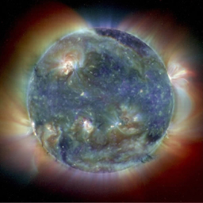
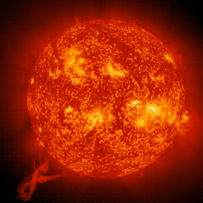
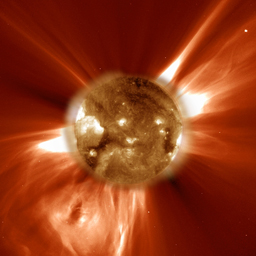
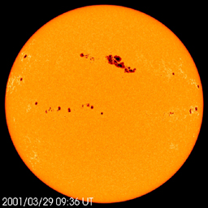
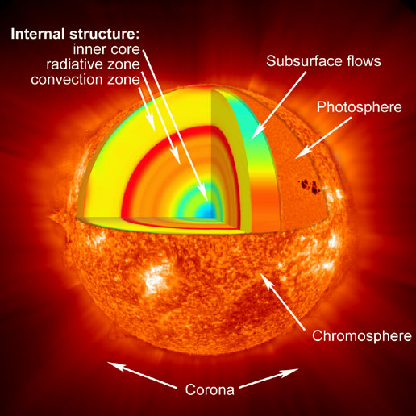
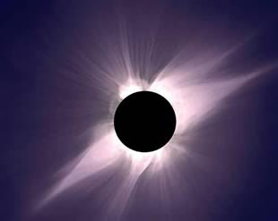
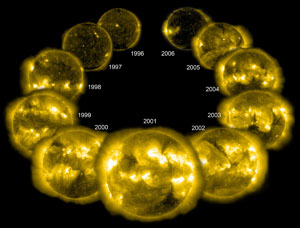

Solar Activity

The Sun |
|  |  |  |  |
|
Solar Parameters |
|||
| Mass: | 1.98892x1030 kg | 332,946 x Earth Mass (Me) | |
| Equatorial Radius: | 6.95x105 Km | ||
| Mean Diameter: | 1.392x106 Km |
|
The Solar Structure |
 |
Internal Structure |
||
Inner Core |
The Inner Core of the Sun is the main engine of this star. Here, gravity and heat provide the necessary energy to drive the nuclear fusion processes that power the sun. In the core, the fusion processes called the Proton-Proton Cycle and the Carbon-Nitrogen-Oxygen Cycle take place. Almost all the heat from the sun is created in the inner core. |
|
Radiative Zone |
Just outside the Inner Core of the sun at a distance approximately 0.25 to 0.7 solar radii lies the Radiative Zone. This zone radiates energy through the process of photon emission and capture by the hydrogen and helium ions. |
|
Convection Zone |
Moving from a distance of approximately 200,000 Km (125,000 mi) lies the Convective Zone of the Sun. This zone is not dense enough to use radiative transfer of energy, instead, it uses thermal convection zones, in other words, it boils. Energy is carried through thermal columns to the surface of the sun and creates areas that we see as solar granulation and super granulation. At the surface, the temperature drops to about 5700 degrees Kelvin (9800 degrees F)* and has a density of approximately 0.2g/m3. These regions also cause the small magnetic fields over the surface of the sun due to the differential convection of the columns. | |
Surface and Atmosphere |
||
Photosphere |
On the surface of the sun, we reach the Photosphere. This region of the sun is opaque (or optically dark) to light. It is the region where the light from the sun is emitted. The light is emitted through the interaction of electrons with Hydrogen atoms. | |
Atmosphere |
The solar atmosphere is comprised of several sub layers: the temperature minimum, the chromosphere, the transition region, the corona, and the heliosphere. The temperature increases from the temperature minimum layer (4700K) towards the solar corona (upwards of 20,000,000K). |  |
Solar Activity |
|
The Solar Wind |
The solar wind is the stream of particles (protons, electrons, neutrinos, etc), energy, and radiation from the sun. The solar wind is caused by the release of energy and particles from the sun's surface. It travels past us at a rate between 300 and 800 Km/s and varies day to day with the change in the sun's activity. The solar wind is the cause of a comet's tail and also the cause of the auroras (northern or southern lights). Earth would be more affected by the solar wind were it not for the magnetic field that surrounds us. The magnetic field causes the charged particles from the sun to flow around the Earth barely showing any effects at all, usually. There have been cases where there is a Coronal Mass Ejection and that can overwhelm our magnetic field for a short period of time causing problems with satellites and communications. |
Current wind speed
|
Coronal Mass Ejections |
Coronal mass ejections (CME) are caused by the snapping of local magnetic fields that have captured plasma (because its a charged, super-heated gas that can follow magnetic fields) and release this into space in a gigantic explosion. These can send material toward the Earth at speeds reaching 3200 Km/s. When these strike Earth with enough energy, they may cause satellite, communication and power grid problems. But they can offer the beauty of an aurora which, can occur at lower latitudes reaching as far as southern Utah. |
|
Prominences and Solar Flares |
Prominences are caused by hot charged plasma following magnetic fields created by convection currents within the sun. As the plasma is released from the sun, it can sometimes be trapped by the magnetic fields and pulled back to the sun in a giant arc. We don't see the magnetic fields themselves, just the effect it has on the gas as its travelling along the magnetic field lines. Occasionally these can magnetic fields can break and cause a CME or a prominence ejection. Solar flares are releases of plasma from the sun. They look like giant flames stretching out from the surface. If there were a large magnetic field nearby, these could easily turn into a prominence. Solar flares vary in size where some appear extremely small (yet in reality are enormous) and others seem to stretch away from the surface appearing to be 1/4 the diameter of the sun. |
|
Sunspots |
Sunspots are dark spots on the sun when viewed in optical wavelengths They only appear dark due to their temperature being about 1000 degrees Kelvin lower than the surrounding surface. They are caused by magnetic fields developing on those areas and suppressing the outward flow of gas beneath the photosphere. This causes less flow of hot gasses on that area making them cooler. This may sound like its a suppression of activity but these are associated with higher activity of the sun. This means the more sunspots you see, the more active the sun is. Sunspots vary in size to that of Utah to several times the size of Earth. They last for a few hours to several days. They normally come in groups and can be seen to have a bipolar magnetic field in that area. |
|
Sunspot and Solar Cycles |
The sun has a cycle of sunspot activity that has a period of every 11 years. This can be seen as and increase of sunspot activity, CMEs, prominences and solar flares. The leading theory on why this occurs is due to the sun's magnetic field. Since the sun is a large ball of hot gas, it has differential rotation. This is when the poles of the sun rotate faster than at the equator. As the sun goes through this, the magnetic field builds up and "wraps" around the sun until a point where it is stretched too far and breaks. At this point, the magnetic poles flip and begin a new cycle. The magnetic poles actually reverse every 11 years so the solar cycle, which is different from the sunspot cycle, is 22 years. |  |